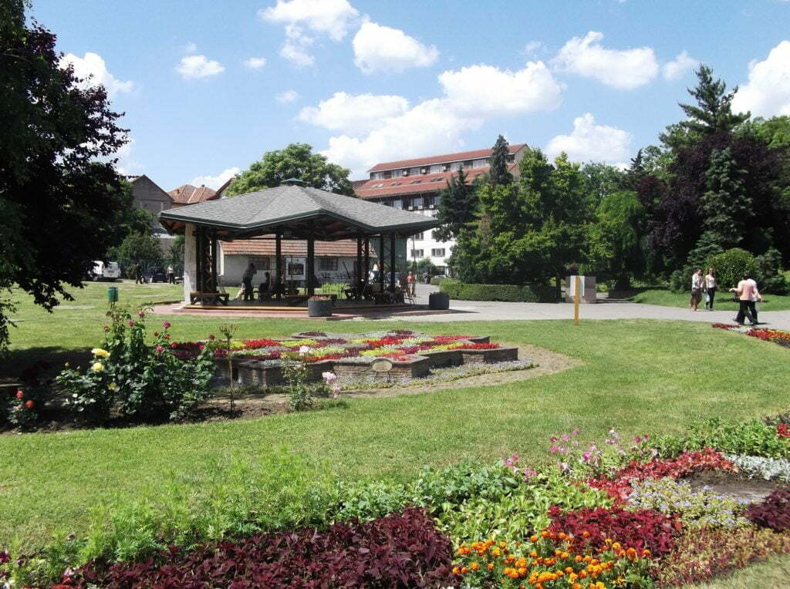
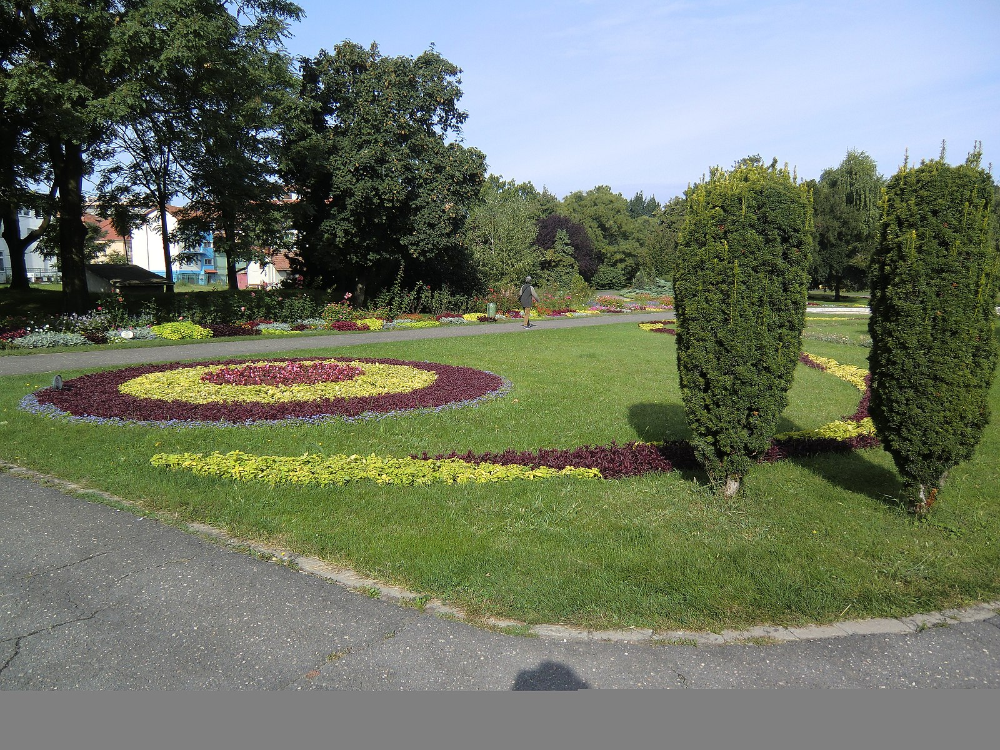
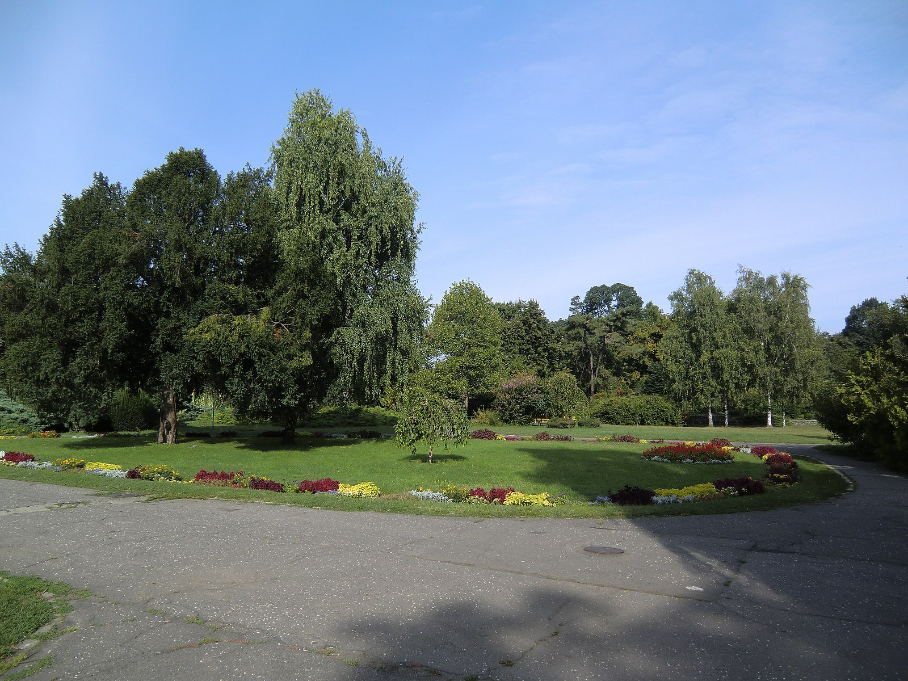
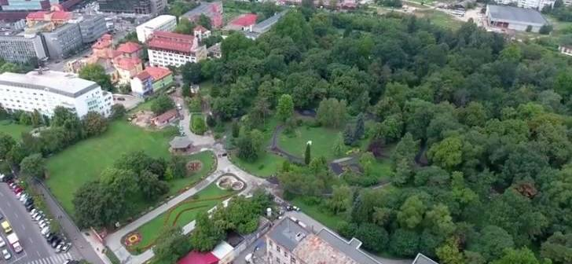

The Botanical Park, since 2007 the Botanical Garden, is an arboretum in Timișoara. In 1995 it was declared a scientific reserve, in order to protect the local and exotic flora.
The first plans for a Botanical Garden in Timișoara date from 1877, when the city council made available to the Society of Natural Sciences of Banat (founded in 1873) the former pig market, today Pleven Square, for the construction of a botanical park. Due to the lack of necessary funds, the society had to give up the project. Between 1902 and 1903, with the construction of the Cadet School (today the New Clinics), a park was arranged around the building by landscaper Árpád Mühle. The park was already part of the project developed by Árpád Mühle and Franz Niemetz, which provided for the long-term construction of a green area consisting of parks and forests around the city. Within this project, the city authorities have already foreseen around World War I the establishment of a park on the current land of the botanical garden, a park also recorded on the perspective plans, laid out on the city map of 1913. On the city map of 1936, the area appears as a park with a series of alleys, with the look they have today.
The current appearance of the park is due to architect Silvia Grumeza who, in 1966, after a previous documentation at the Bucharest Botanical Garden, elaborated a project. The park was designed to fulfill multiple functions: scientific, didactic, educational and recreational. Between 1986 and 1990, 1,650 plant species were planted here, all designed according to phytogeographical and aesthetic criteria. The plants were brought from parks all over the country, from private collections or from international seed exchanges. The park was opened to visitors on 29 June 1986.[4] In 2008, a garden with a traditional Japanese teahouse was set up in the park.
   